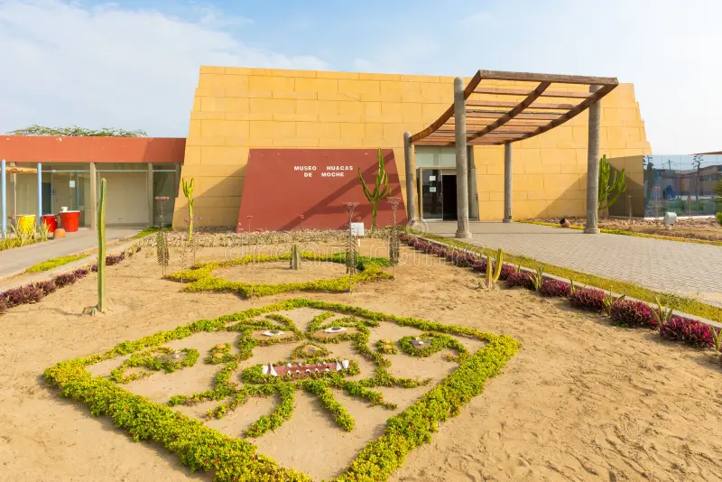
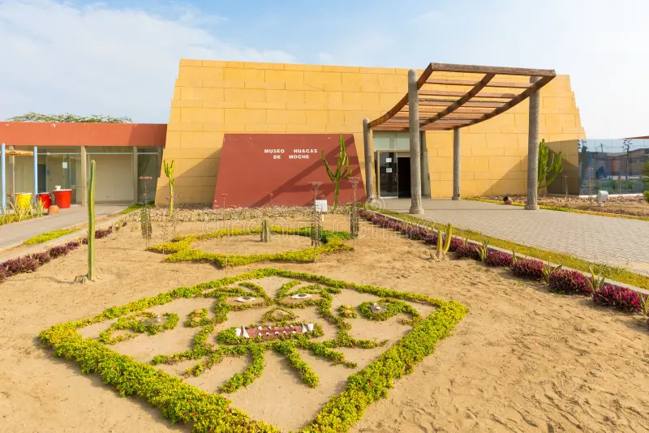

Ciudad de la eterna primavera
Trujillo es una ciudad peruana, capital de la provincia homónima y del departamento de La Libertad conocida la ciudad de la eterna primavera gracias a su privilegiado clima. Además de ser la cuna de la elegante marinera, cuenta con las playas más favoritas por los surfistas. Es la tercera ciudad más poblada del país con 1 248 800 habitantes en el año 2024. Está situada en la Costa Norte peruana, en el margen derecho del río Moche, en el valle de Moche. La ciudad comprende 6 distritos y el área metropolitana, de la cual forma parte, Se extiende sobre un área urbana de 164 km² y la conforman 12 distritos.
Galería de imágenes
 

Mapa de la población
Lugares de interés
Huaca del Sol y la Luna

La Huaca del Sol y la Luna fueron dos de las estructuras más importantes de la cultura moche. Estas dos alucinantes huacas se encontraban en el núcleo urbano de los moches, y en el pasado estaban rodeadas de placas, viviendas y calles en las que vivía esta gran sociedad jerarquizada. No olvides visitar el Museo Huacas de Moche, ubicado muy cerca del centro arqueológico.
Ubicación: La Huaca del Sol, Valle de Moche, Moche, Perú
Correo: proyectohuacasdemoche@unitru.edu.pe
Laguna de Conache

Un tesoro de biodiversidad del Departamento de La Libertad. La Laguna de Conache es el lugar perfecto para escapar del ajetro de la ciudad para conectarse con la naturaleza. La laguna presenta una flora y fauna espectacular donde podrás observar hermosos árboles de algarrobo, garzas blancas, patos silvestres, chiscos, entre otros.
Ubicación: Complejo Ecoturístico Laguna de Conache, Laredo 13100, Perú
Redes sociales: Facebook
Balneario de Huanchaco

El Balneario de Huanchaco es el destino ideal para los amantes del surf y para aquellos que quieren disfrutar de los mejores platos marinos de la gastronomía peruana. Aquí observarás espectaculares atardeceres en su muelle, además de los sorprendentes caballitos de totora, de hasta cuatro metros de alto, que decoran toda la playa.
Ubicación: Malecon Grau, Huanchaco 13000, Perú
Plaza Mayor de Trujillo
Es el principal escenario histórico de la ciudad de la era republicana. Se encuentra ubicada en la parte central del centro histórico de Trujillo. A su alrededor se encuentran el edificio del Palacio Municipal de la ciudad, la Catedral de Trujillo, el Arzobispado de Trujillo, entre otros. La plaza de Armas de Trujillo es atravesada por el jirón Pizarro, el jirón Independencia, el jirón Orbegoso y el jirón Almagro..
Ubicación: Plaza de Armas de Trujillo, Trujillo 13001, Perú
Teléfono: +5144484240